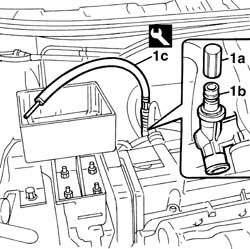
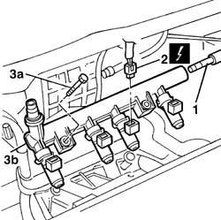
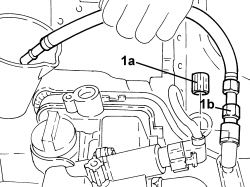
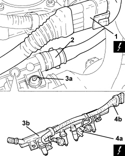

1056B60 single fuel manifold pipe, with injectors - r + r
- Path
- Procedures > 10 ENGINE > 1056 PETROL INJECTION SYSTEM > 1056B MULTI-POINT INJECTION SYSTEM (MPI) > 1056B60 single fuel manifold pipe, with injectors - r + r
- Kind
- repair procedure (removal / refitting; the operation number is the code)
- Applies to
- engines: 1.2 8v, 1.4 8v, 1.6 16v; all production periods
- Interactive page
- https://sloeber94.github.io/elrnDB-fDbl/en/#/2584245
Applies to: engines: 1.2 8v; all production periods
 Removing
Removing
 Refitting
RefittingDisconnect the negative battery terminal.
Op. 1048A10 AIR FILTER ASSEMBLY - R.R.
1. Remove the protective cap (1a) for the fuel manifold (1b) and discharge the fuel pressure in the manifold using the tool (1c).
Collect the fuel in a suitable container.
Description | Code | |
|---|---|---|
1c | Rapid attachment connector | 1.870.684.000 |

Applies to: engines: 1.2 8v; all production periods
1. Disconnect the fuel supply pipe rapid connector.
2. Disconnect the electrical connectors for the injectors.
Description | Connector | |
|---|---|---|
2 | Injector |
3. Undo the bolts (3a) and remove the manifold pipe (3b).

Applies to: engines: 1.2 8v; all production periods
Refitting
RemovingFit the manifold pipe and secure it using the bolts.
Connect the electrical connectors for the injectors.
Description | Connector | |
|---|---|---|
- | Injector |
Connect the fuel supply pipe rapid connector.
Op. 1048A10 AIR FILTER ASSEMBLY - R.R.
Connect the negative battery terminal.
Applies to: engines: 1.6 16v; all production periods
Removing
RefittingPosition the vehicle on a lift.
Disconnect the negative battery terminal.
Description | Connector | |
|---|---|---|
- | Battery |
Op. 1048A32 HOSE FROM AIR FILTER TO INTAKE MANIFOLD - R.R.
Op. 7055B54 PROTECTION/GUARD UNDER ENGINE - R.R.
Op. 1084A16 OIL DIP STICK PIPE - R.R.
Op. 1084A22 ENGINE OIL FILLER - R.R.
Op. 1072B50 AIR INTAKE CHAMBER - R.R.
Op. 1056B61 SINGLE FUEL MANIFOLD WITH INJECTORS - R+R WITH AIR CONVEYOR/BOX REMOVED
Applies to: engines: 1.6 16v; all production periods
Refitting
RemovingOp. 1056B61 SINGLE FUEL MANIFOLD WITH INJECTORS - R+R WITH AIR CONVEYOR/BOX REMOVED
Op. 1072B50 AIR INTAKE CHAMBER - R.R.
Op. 1084A22 ENGINE OIL FILLER - R.R.
Op. 1084A16 OIL DIP STICK PIPE - R.R.
Op. 7055B54 PROTECTION/GUARD UNDER ENGINE - R.R.
Op. 1048A32 HOSE FROM AIR FILTER TO INTAKE MANIFOLD - R.R.
Connect the negative battery terminal.
Description | Connector | |
|---|---|---|
- | Battery |
Remove the vehicle from the lift.
Applies to: engines: 1.4 8v; all production periods
Removing
Refitting- Disconnect the negative battery terminal.
Op. 1048A10 AIR FILTER ASSEMBLY - R.R.
1. Unscrew protective cap (1a) and discharge the fuel pressure through fitting (1b).
Description | Code | Function | |
|---|---|---|---|
- | Connector | 1.870.684.000 | Fuel system pressure drainage |

Applies to: engines: 1.4 8v; all production periods
1. Disconnect the injector electrical coupling.
Description | Connector | |
|---|---|---|
1le | Injector coupling |
2. Disconnect the fuel pipe rapid connector.
3. Undo the bolts (3a) and remove the fuel manifold pipe assembly (3b).
4. Disconnect electrical connections (4a) and remove injector wiring (4b).
Description | Connector | |
|---|---|---|
4a | Injector |

Applies to: engines: 1.4 8v; all production periods
Refitting
Removing- Refit the injector wiring in its seat and connect the electrical connections.
- Place the fuel filler pipe assembly in its housing and secure it using the bolts.
- Connect the fuel pipe rapid connector.
- Connect the injector wiring electrical coupling.
Op. 1048A10 AIR FILTER ASSEMBLY - R.R.
- Connect the negative battery terminal.
Topics linked from this page (10)
- 1048A10 air cleaner filtering element - replace
- 1048A32 sleeve from air cleaner to intake manifold - r + r
- 1056B61 single fuel manifold with injectors - r+r with air conveyor/box removed
- 1072B50 sleeves connecting air capacity box to inlet manifold is - r+r
- 1084A16 oil dip stick pipe - r r
- 1084A22 engine oil filler - r r
- 7055B54 under-engine guard - r r
- A001 BATTERY
- D081 INJECTOR COUPLING
- N070 INJECTOR